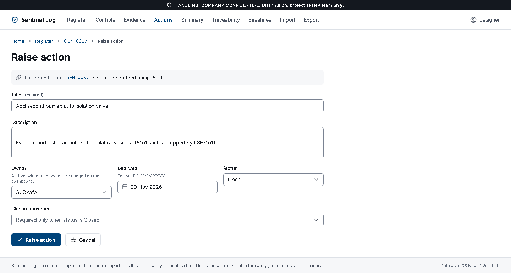

Raise an action from evidence
- Open the rejected evidence; the page shows the gap action gap action with its title Re-inspect fan reversal timing evidence.
- Open the raise-action page scoped to the evidence record and submit title, due date, and open status; Sentinel Log allocates a fresh identifier server-side and returns to the evidence detail showing the new action. See Figure 1.

Figure 1. Raise action from evidence
Not in this release. Assistant quality checks are not in this release. No,, or pages exist.